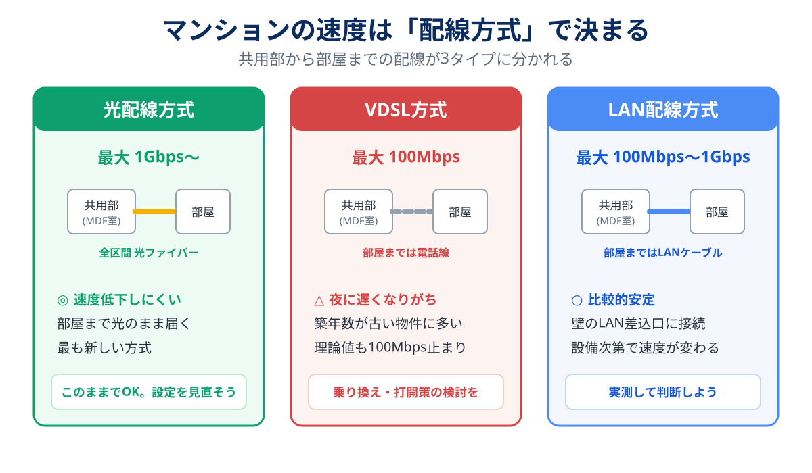

「夜になると動画が止まる」「Web会議で自分だけカクカクする」。マンション住まいのネットの悩みには、実はかなりはっきりした“犯人の傾向”があります。
この記事では、5分でできる原因の切り分けから、費用0円の改善策、根本解決の乗り換えまで、効果の大きい順に解説します。手当たり次第にルーターを買い替える前に、まず犯人を特定しましょう。
マンションのネットが遅い原因は、ほとんどが次の3つです。①建物の配線方式がVDSL(古い電話線) ②ルーターが古い・IPv6非対応 ③「無料インターネット」の混雑。
①なら乗り換えや別回線の追加、②ならルーター側の対策(数千円〜)、③なら自前回線の契約が解決策になります。切り分け方から順に説明します。
スマホはどれ?マンションプランの料金とエリアを見る(GMOとくとくBB光)公式サイトへ →PR・エリア判定は無料で、申し込みにはなりません
この記事の条件で: マンションの光回線7社を2年総額で並べる


迷ったら、ツールで候補を絞れます
乗り換えを検討する段階なら、工事可否とスマホのキャリアから候補を出せます。
まず5分:原因の切り分け3ステップ
-
速度を測る(昼と夜の2回)
速度測定サイト(Speedtest、Fast.comなど)で、昼と21〜23時の速度を測って記録します。夜だけ極端に落ちるなら「混雑」配線方式か無料ネットが濃厚です。
-
有線とWi-Fiで比べる
PCをLANケーブルで直結して再測定。有線は速いのにWi-Fiだけ遅いなら、犯人はルーター(か置き場所)。回線の乗り換えでは解決しません。
-
配線方式を確認する
有線でも遅い・夜に落ちるなら、建物の配線方式を確認します(調べ方は後述)。VDSLならそれが根本原因の可能性大です。
速度を決める「配線方式」を理解する
マンションの回線は「建物の共用部まで」は光ファイバーで来ています。問題は共用部から各部屋までの区間。ここが3方式に分かれ、速度の上限を決めています。

VDSL方式は電話線を使うため、どんな回線を契約しても理論値100Mbpsが上限。夜の混雑にも弱く、「遅いマンション」の典型パターンです。築15年以上の物件に多く残っています。
3方式の違いを表で見る
| 配線方式 | 共用部から部屋まで | 最大速度(フレッツ光の場合) | 部屋で見える機器 |
|---|---|---|---|
| 光配線方式 | 光ファイバー | 最大1Gbps(10ギガ対応の建物もある) | 壁の「光コンセント」+ONU |
| VDSL方式 | 電話線(銅線) | 最大100Mbps | 電話の差込口につながったVDSL装置 |
| LAN配線方式 | LANケーブル | 最大100Mbps | 壁のLANポート(装置なしでつながることも) |
※ NTT東日本・西日本「フレッツ 光ネクスト マンションタイプ」の技術規格上の最大値。auひかりなど他社設備や、建物独自のインターネット設備では上限が異なります。
もう1つ押さえておきたいのが、マンションタイプは建物までの回線を住人で分け合う仕組みだということです。NTT東日本の資料でも、マンションタイプは「最大1Gbpsのアクセス区間を複数の利用者で共用する」サービスと説明されています。同じ建物の利用者が一斉に使う夜に遅くなりやすいのはこのためで、配線方式が光でも、夜だけ落ちる物件はあります。その場合に効くのが、後で説明するIPv6(IPoE)への切り替えです。
ちなみにフレッツ光を直接契約する場合、マンションタイプの月額は「ミニ」「プラン1」「プラン2」の区分で変わります。区分は同じ建物で見込まれる契約数で決まり(NTT東日本は4・8・16契約、NTT西日本は6・8・16契約が目安)、契約が多い建物ほど1契約あたりが安くなります。ドコモ光などの光コラボは建物の区分に関係なく一律のマンション料金のことが多いので、料金表の区分が分からなくても比べやすいのが利点です。
自分の部屋の配線方式の調べ方
- 壁の差込口を見る:「光コンセント」の表記があれば光配線方式。電話のモジュラージャックにVDSL装置(モデム状の機器)が繋がっていればVDSL。壁にLANポートがあればLAN配線方式
- 契約回線のマイページ・書類:プラン名や設備情報に方式が書かれていることが多い
- 管理会社に聞く:「この建物のインターネット設備の配線方式を教えてください」で一発
VDSLの物件でも、光配線に移れる場合がある
NTTは、VDSL方式・LAN配線方式の設備を少しずつ光配線へ移す方向に動いています。2024年には東西それぞれで次のような発表がありました。
| NTT東日本(2024年9月発表) | NTT西日本(2024年11月発表) | |
|---|---|---|
| 対象の建物 | VDSL/LAN配線方式の装置だけが置かれていて、利用者がいない集合住宅 | 光配線方式とVDSL/LAN方式の装置が併設されている一部の建物と、VDSL/LAN方式の装置だけで利用者がいない建物 |
| VDSL/LANの新規受付 | 2024年10月24日に終了 | 2025年1月31日までに停止 |
| その後の申し込み | 光配線方式か戸建て方式で提供(建物によっては提供できない場合あり) | 既存の利用者に案内のうえ、光配線方式への移行工事を受付。2025年1月1日以降に申し込んだ移行工事は工事費無料 |
つまり、今VDSLで使っている建物でも、すでに光配線の設備が併設されていることがあります。NTT西日本エリアで併設の建物なら、移行工事費の負担なく光配線に移れる可能性があります。自分の建物が対象かは、NTTの窓口(局番なしの116)か、契約中の光コラボ事業者に「この建物に光配線方式の設備はありますか」と聞くのが確実です。
どちらの発表も「建物の状況によっては提供できない場合がある」としています。光配線の設備がない建物では、下の対策3にある別設備・戸建てタイプ・ホームルーターから選ぶことになります。
解決策を効果の大きい順に
対策1【0円〜】IPv6(IPoE)接続に切り替える
契約中の回線がIPv6(IPoE)対応なのに使っていないケースは意外と多いです。マイページから無料で切り替えられることが多く、夜間の混雑による低下がこれだけで改善することがあります。ルーターがIPv6対応かもあわせて確認を。
対策2【数千円〜】ルーターを見直す
有線は速いのにWi-Fiが遅い場合はこちら。目安として、5年以上前のルーターはWi-Fi 5以前の世代のことが多く、買い替え効果が大きいです。Wi-Fi 6対応・IPv6(IPoE)対応のものを選び、床置きや棚の奥ではなく開けた場所に設置しましょう。
対策3【根本解決】建物の別設備・別回線に乗り換える
VDSLが原因の場合の本命です。選択肢は3つ。
- 建物に別の回線設備が入っていないか確認する:フレッツ系がVDSLでも、auひかりなど別系統の設備が光配線で入っている物件があります。各社サイトの物件検索で確認できます(auひかりのマンション対応を確認する方法で判定手順を解説しています)
- 光配線方式への切り替えを管理会社に相談する:NTT側の設備更新で光配線に切り替わる物件も増えています。住民の要望が動くきっかけになることも
- 戸建てタイプ(ファミリープラン)を部屋に直接引く:管理会社の許可が必要ですが、部屋まで光を直接引き込む方法。マンションプランより月額は上がりますが速度は別物です
対策4【工事不可なら】ホームルーターに切り替える
工事の許可が下りない・引越し予定があるなら、コンセントに挿すだけのホームルーターが現実解。5G対応エリアなら、VDSLより速くなるケースも普通にあります。詳しくは工事不要WiFi比較で解説しています。
管理会社にはこう聞く(コピーして使える文面)
配線方式や別設備の有無は、管理会社や大家さんに聞くのがいちばん確実です。ただ「ネットが遅いんですが」と伝えると話が広がりすぎるので、確認したいことを3点に絞って聞くと返事が早くなります。
お世話になっております。〇〇号室の△△です。インターネット回線について、次の3点を教えていただけますでしょうか。
1. 建物のインターネット設備の配線方式(光配線方式/VDSL方式/LAN配線方式のどれか)
2. フレッツ光以外に、auひかりなど別の回線設備が建物に入っているか
3. 2の設備がない場合、部屋まで光ファイバーを直接引き込む工事(戸建てタイプ)を相談できるか。可能な場合、穴あけの有無や原状回復の条件
工事が必要になる場合は、内容が分かった時点であらためてご相談します。よろしくお願いいたします。
3点目まで先に聞いておくと、「VDSLしかない」と分かったときに次の手をすぐ打てます。工事の許可の取り方や、許可が要る工事・要らない工事の線引きは賃貸で光回線を勝手に契約していいかで詳しく解説しています。
これから部屋を探すなら:内見で見ておく4つのこと
引越し前なら、入居してから悩むより物件選びの段階で見抜くほうがずっと楽です。内見のときに次の4つを確認してください。
| 確認すること | 見る場所・聞く相手 | 望ましい状態 |
|---|---|---|
| 部屋の壁の差込口 | リビングや各部屋の壁 | 「光」と書かれた光コンセントがある |
| 建物に入っている回線 | 不動産会社に聞く/各社の物件検索 | 光配線のフレッツ光、または別系統の回線設備がある |
| 「インターネット無料」の中身 | 不動産会社に提供会社と方式を聞く | 部屋ごとの光回線か、別途自分で契約できるか |
| 個人契約・工事の可否 | 管理会社・大家さん | 個別契約OK。工事が必要な場合の条件が明確 |
特に「インターネット無料」の物件は、建物全体で1本の回線を分け合っていることがあり、在宅勤務やオンラインゲームには足りないことがあります。無料ネットが遅い理由と、自分で回線を足すときの注意点はインターネット無料の賃貸が遅い理由にまとめています。引越しに合わせた回線の手配は引越しのネット回線の段取りも参考にしてください。
乗り換えるならどの回線?
マンションでの乗り換え先は「建物対応 × スマホのセット割」で決めます。
| 状況 | 有力な選択肢 | 理由 |
|---|---|---|
| auひかりの設備が建物にある | auひかり | 独自回線で混雑に強い。au/UQセット割 |
| フレッツ設備が光配線方式 | スマホに合わせた光コラボ (ドコモ光/ソフトバンク光/GMOとくとくBB光) |
設備はそのままに事業者変更で切り替えが速い |
| VDSLしかない・工事不可 | ホームルーター | 工事なしで即日。5Gエリアなら速度も期待できる |
7社の料金・実測・セット割を比較し、物件検索の入口もまとめています。
マンションプランの料金とエリアを見る(GMOとくとくBB光)光コラボ・縛りなし・v6プラス対応よくある質問
配線方式はどうやって確認できますか?
VDSLでも速くできますか?
無料インターネット付きなのに遅いのはなぜ?
賃貸でも光回線の工事はできますか?
VDSLのマンションから光配線に移ることはできますか?
内見のときにネット環境の何を見ればいいですか?
まとめ:犯人を特定してから、お金を使う
- 切り分けは「昼夜の実測」「有線vs無線」「配線方式」の3ステップ
- Wi-Fiだけ遅い→ルーター対策、有線でも遅い→配線方式(VDSL)を疑う
- VDSLの根本解決は別設備への乗り換えかホームルーター
- 0円でできるIPv6化は今日試せる
乗り換え時の手順とキャッシュバックの注意点は乗り換え完全ガイドにまとめています。
- NTT東日本・西日本 公式サイト(マンションの配線方式・提供形態)
- 各社公式サイトの物件検索・提供エリア情報(2026年8月確認)
- INTERNET Watch:NTT東日本、VDSL/LAN配線方式の一部で新規申込受付を終了(2024年10月1日)
- INTERNET Watch:NTT西日本、VDSL/LAN方式から光配線方式への移行工事費を無料に(2024年12月6日)
- NTT東日本「フレッツ 光ネクスト マンションタイプ」サービス説明資料(配線方式別の最大速度・アクセス区間の共用)